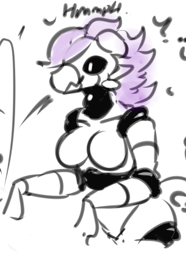

Crimson Scale Empire Drone Guide
Z-Crosse Empire - Drone & Droids Guide:⌗
“If you are reading this list, then either one of two things has happened; 1. You are one of my loyal lieutenants, doing some reading on the different drone types that are at my disposal, or 2. you are a resistance member trying to search for any weaknesses in my drones. If it is the former, then I hope one of these drones may pick your fancy for whatever you need. But, if you are the latter, do know that all my files are encrypted, and any unauthorised reading by those who are not part of my lovely empire would have triggered the silent alarm the moment you saw the page load. By the end of this guide, a drone with a nice control device waiting to be put onto/into you is already nearby. So start running, it makes things more interesting for them”.
- Empress Zoe Crosse.
Below is a general guide on the different drones that the Z-Crosse Empire uses within it’s ranks, with stats and written descriptions of the drones details.
-
-
A Blank Slate
-
How did we get here?
-
All the colours of the drone rainbow
-
-
-
Synthetic Assistance
-
Whole lotta bots
-
Man VS Machine
-
Drone Details:⌗
A Blank Slate (The Default Drone)⌗
[AN: This image is not the actual drone, rather just a placeholder that looks close enough. Original Image by MXL]
The Z-crosse empire Kobold-Class drone is the cornerstone of drone technology, as well as the core backbone of the Z-crosse empire, making up the core workforce of the Empire; From drones designed to guard high-ranking officials, to drones that make a very nice pain au chocolat, drones are as versatile as they are dependable. The default drone, while simple and plain, is still a marvel of technology;
Their core body is comprised of a dark red, glossy latex-like substance, that takes on the form the basic form of a dragon-like being, but with the features subdued. While there is a snout and a tail, they are small in nature, as the dark red layer is merely an form of body glove that covers the body underneath, hiding any details of who the original person was. On top of this, matte black body plates cover the core body, giving armour to the entire body, as well as giving form to the head and the tail, making the drones have a resemblance to their empress, however they lack the wings that Zoe has, as well as having shorter, light red hair instead of the longer, dark reddish purple hair that Zoe has. On the face mask, a pair of display screens make up the “eyes” of the drone, which can be used to emote. Finally, a pair of red bracelets and a red collar, both decorated with golden spikes complete the look of the drone. The genitalia of the drone’s host are preserved, regardless of the gender; If the drone took over someone with a penis, this penis would persist, but taking the form of a glowing red penis. If the drone took over someone with a vagina, then the vagina would persist.
Despite it’s suggestive appearance, the drone is actually fairly capable even at a base model; The underbody, due to it’s slime-like nature, can absorb some projectiles that do collide with it, and the matte black armour plating that covers the body is very much capable of taking damage, as well as easily dissipating temperature. Alongside this, most drones come with a energy shield that protects them from damage. Should the drone be ripped from it’s host, the pieces would go into a dormant state, and the under glove goo would go inside the host’s body, until the drone is safe to re-emerge. If a drone does take damage to a plate, enough to cause the plate to break off, the drone can easily absorb metallic items to regenerate the damage, as well as forming new plates if a dormant drone was to capture someone.
How did we get here? (How new drones are made)⌗
There are many processes for the creation of new drones, some of which are more intricate than others, with some requiring a lot of time and patience, and others requiring only a brief encounter.
-
Transformation pods: A potential host can be placed into specially constructed transformation pods, taking an appearance similar to a tanning bed. However, along the inside are several small holes, which the black latex-like goo that comprises the drone under glove is distributed from, covering the person in drone goo. Once the goo has taken over the person, the drone is pumped liquid metal into the back, so that the drone can synthesize the plating that covers it’s body. This method is by far the quickest of the methods, easily converting a person into drone in less than a minute. However, getting someone into the transformation pod is a process, and someone could easily damage the transformation pod to halt the transformation process.
-
Drone Mask: A drone face mask can easily serve as a transformation device, however the transformation process is not as simple as the pods; A drone mask will lie in wait, in a dormant state. Once a person gets too close to the mask, it will use a small amount of the drone goo to latch onto the user, before beginning the entire conversion process. A benefit of this method is that it allows for a drone to be spontaneously made, even in areas where having a transformation pod would be hazardous, such as inside enemy bases or near conflict zones. Another benefit is that a drone itself can perform this onto a target, allowing a single drone to potentially convert an entire group of people into drones very quickly.
-
Cursed Attire: Only really seen in Z-Crosse Empire bases of significant importance, some of Zoe’s own attire may hide a sinister secret; As many of them are comprised of the same latex-like substance that comprises the under glove of the drones, albeit in a dormant state, once an enemy gets into close proximity to the attire, it will awaken and latch onto the host, turning them into a drone wearing such an attire. Once the conversion has been completed, the drone will usually remove the attire, returning it to where it was initially placed. much like the drone mask, it relies heavily on the element of surprise to catch someone, however due the attire covering the entire body instead of a single part of the body, it is far more quicker at converting someone.
-
Drone Goo Vats: While not an intentional conversion method, a host who has been pushed into a large vat of drone goo, either by a drone or by a less than reliable ally, causing them to sink into the goo. This method is extremely quick to convert a host, as the conversion is almost immediate as the host falls into the vat, the goo itself preventing any form of escape. However, a downside to this method is that drones will only be removed if a drone actively removes them, or the vat itself has a ladder for the drone to escape from
-
Drone Goo-based weapons: Finally, some weapons used by the Z-Crosse empire itself comes with either properties that allow for drone conversion, or ammo types that allow for the dispersion of drone goo. For example, some combat drones equipped with a ZCE Rotary grenade launcher may use grenades that are filled with drone goo, which disperses once the grenade detonates. Some melee weapons, such as the empress’ Draco-Sentinel hammer, which can cover a target in drone goo within a single hit of the Hammer. Zoe also possess a breath weapon, that allows her to spread the drone goo, however this version of the drone goo is only used to create praetorian form drones.
All of the Colours of the drone rainbow (Drone Variants)⌗
While the default drone is quite a capable drone, there are several different drone variants that are employed by the Z-Crosse Empire. Most of these drones are designed with a particular purpose in mind, often noted by their special modifications for that specific role. Below are the most notable variations:
-
Combat Drone: A drone designed mainly for usage in combat situations, the combat drone is notable not only by the green bands on it’s arms, but also having far more bulkier plating when compared to the standard drone, and having the eye-like receptors and display being replace by a singular thin, visor-like eye slit. Combat drones are also usually equipped with some variety of ZCE manufactured weapon, ranging from standard issue assault rifles, to more complex weapons such as sniper rifles or rocket launchers
-
Sentinel Drone: Sentinel Drones are a key step up from Combat drones, having the bulkiest bodies compared to combat drones. What they lack in speed and dexterity, they more and make up for it with Power and resilience.
-
Assassin Drones: Despite their names, Assassin drones are not just tasked for assassinations, but rather refer to many drones that trade out armour and size for a much more sleek and stealthier appearance. Many assassin drones also come with spare drone masks around their waists, forming a skirt of them so that they can be easily applied to a target
-
Command Drones: Almost identical to standard combat drones, they are distinctly noted by their larger left shoulder pauldron, as well as a large backpack with an antenna. Command drones are used to relay commands to Combat drones when away from a central base, the backpack functioning as a communication relay and beacon
-
-
Utility Drones: A drone designed for more utility based roles, they are noted by having yellow bands around their arms. Depending on the sort of role the drones partake, the drone will have modifications that make that role easier. Unlike other drone types, it is very rare that utility drones will convert people
- Driller Drones: Drones specifically catered for underground tunnelling, the driller drones have specially designed circular drills, allowing for quick digging through even the most dense of rock.
-
Recreational Drones: Drones designed for recreational purposes, both mundane recreation such as show magic and bartending, as well as more sensual recreation such as prostitution. Each recreation drone can be noted by red bands around their arms
-
Science Drones: Drones designed for more scientific pursuits, such as research and development. Noted by blue bands around their arms, as well as having a skirt-like structure around their waist.
-
Misc Drones: These drones are the sort of drones that do not follow the above criteria, usually for one-off drones or prototype drones before being fully implemented. Noted by white bands across their arms, as well as generally not following the above drones.
Droid Details:⌗
Synthetic Assistance (Droid Details):⌗
While drones are the core basis of the Z-Crosse Empire, they’re not the only workforce that the empire has in it’s employ; Around key installations, Drones are usually assisted and suplimented by ZCE Autonomous Assistants, or ZCE Droids for short. Unlike the drones, the droids possess no organic elements, nor do they possess any means of converting people into drones, as the droid’s only purpose is to complete the tasks assigned to it. As a result of this, drones are far more simplistic in both design and in capabilities. Most droids are usually commanded by drones, due to their limitations, however some specific droids may feature brain scan AIs instead of a basic AI, allowing for more complex thought.
Whole lotta bots (Droid Variants):⌗
WORK IN PROGRESS
Man VS Machine (Real Brain Scans VS AI Brain Scans)⌗
WORK IN PROGRESS
Extra Details & Trivia:⌗
Extra Details:⌗
- While most drones follow the baseline’s aesthetic, with deviations based on what class of drone they are, there are some drones that do have some remaining clothing items from their hosts, usually just accessories such as necklaces, bracelets and headbands. This may be because the accessory resembles something the empress would wear herself, or important clothing items that would signify the drone’s host to be a former figure. For example, A princess of a powerful leader
- While it may appear that the drone takes over the host completely, this is not entirely the case; while the drone suit takes over the physical form, the mind is only partially altered to fit more inline with other drones. Key details from the host, as well as their original body, are still preserved. This is especially notable in succubi and infiltrator drones, who can actively disguise their drone features into clothing and accessories in their incognito form, as well as actively using their old personality in this incognito form
- Removal of the drone suit from a host, without using Z-Cross Empire tools to disable the suit, is very hazardous for the host; The drone actively bonds mentally and physically with the host when attached, and improper removal will actually cause the bonding to be damaged, at best leaving the host weak and the drone suit damaged, and at worst will love the host brain dead. Re-attaching the suit can reverse the damage, but depending on how long the suit has been removed, the bond may need to be re-established, risking complete identity death
Trivia⌗
-
WORK IN PROGRESS